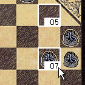
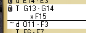
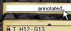
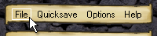
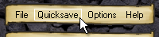
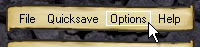
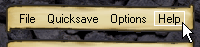

ThudBoard index | about ThudBoard | ThudBoard how-to | download
ThudBoard - User Guide
Getting started
 ThudBoard is rather easy to use. If you need to read this text, I
may be mistaken in my previous assumption.
ThudBoard is rather easy to use. If you need to read this text, I
may be mistaken in my previous assumption.
The screen can be separated in three parts: the playing board, the moves
list and the rest.
The next section assumes that you have downloaded ThudBoard and started
the application, so you'll recognize the different areas. If you haven't,
then, at the very least, have a look at the screenshot on the index page
(click on that image to see the full screenshot).
The Thud Board
 Simply click and drag a piece and release it where you want it placed. If you pick it up again and move it further, that is considered as part of the same move. If you put it back in its original position, the move is not played.
If you drop the piece on another piece, this piece is taken off the board. Another way to take pieces off the board is just to click them after you've played the move. You can see that they will be removed as there is an 'X' hovering above them if the mouse points at them. If you hover over the piece you just moved, you can see an arrow symbol hovering there, indicating that you can pick it up again and move it further.
A move is finalized when you left-click anywhere on the board except for places occupied by pieces.
The Moves List
 Click on any line to view the position the board was in after that move
was played. You can usually continue playing from here, except if you are
before the save-line (marked with a lock-icon). To move the save-line, simply
select the line you wish as the new save-line, and click the 'Quicksave' option.
The selected line is highlighted, and will be called the battle-line from
now on. This move and all previous moves are now locked.
Click on any line to view the position the board was in after that move
was played. You can usually continue playing from here, except if you are
before the save-line (marked with a lock-icon). To move the save-line, simply
select the line you wish as the new save-line, and click the 'Quicksave' option.
The selected line is highlighted, and will be called the battle-line from
now on. This move and all previous moves are now locked.
 When you start a new move on the board, the line below the battle-line will light up and record the move you are playing. If you finalize this line, all lines that are after the battle-line will be lost. This is known as exploring alternate futures.
 To get to the position the board was in before any moves were played, click on the name of the battle above the list. If this name has a little text-balloon to the left of it, that means the battle contains comments. If they are not enabled, you can enable the from the 'Options' menu.
The lines at the top and bottom with the little arrows on them can be used to scroll through the list. If the comments are enabled, a text-box is visible below the bottom scroll-line. This box contains the comment for the current move and can be modified at will.
 How to read a single line: the first character in the line indicates a move
by either a dwarf ('d') or a troll ('T') or the rock ('R'), followed by the
'from-to' coordinates. Additional text will indicate captured pieces, which
are written as a coordinate prefixed by an 'x' (e.g. 'xF15'). Captured pieces
are presented on lines below the actual battle-line and these capture-lines
are indented. Since version 1.0, Dwarf moves are now prefixed with the
move-number. Since version 1.4, the Rock can move too and increases the
move-number.
How to read a single line: the first character in the line indicates a move
by either a dwarf ('d') or a troll ('T') or the rock ('R'), followed by the
'from-to' coordinates. Additional text will indicate captured pieces, which
are written as a coordinate prefixed by an 'x' (e.g. 'xF15'). Captured pieces
are presented on lines below the actual battle-line and these capture-lines
are indented. Since version 1.0, Dwarf moves are now prefixed with the
move-number. Since version 1.4, the Rock can move too and increases the
move-number.
Copy/Paste in the Moves List
 Copy/Paste will come in handy for playing by mail or icq or the like.
Pressing Control-c will copy the current battle-line to the clipboard.
Copy/Paste will come in handy for playing by mail or icq or the like.
Pressing Control-c will copy the current battle-line to the clipboard.
 Pressing Control-v will try to paste the clipboard-contents below the current
battle-line. This may fail when the move on the clipboard cannot be performed.
The same actions may be performed by clicking the copy/paste icons on the battle-
line. Notice that the paste-icon has three forms: disabled (no thudmove on the
clipboard), partially disabled (a thudmove was found, but it can't be played
from this position) or fully enabled (the thudmove can be played here, provided
you are not in a locked part of the battle).
Pressing Control-v will try to paste the clipboard-contents below the current
battle-line. This may fail when the move on the clipboard cannot be performed.
The same actions may be performed by clicking the copy/paste icons on the battle-
line. Notice that the paste-icon has three forms: disabled (no thudmove on the
clipboard), partially disabled (a thudmove was found, but it can't be played
from this position) or fully enabled (the thudmove can be played here, provided
you are not in a locked part of the battle).
The Rest
The rest consists of the logo and menu at the top and the url at the bottom. Clicking the url will start your browser with the link to the Thud website. The menu at the top has four options. These options are named 'File', 'Quicksave', 'Options' and 'Help'.
If you click 'File', you can choose between 'new', 'open', 'save as', and 'save snapshot'. Below these, a list of Most Recently Used files (mru) is kept, which you can use to quickly open files. 'New', 'open', and 'save as' work as expected. 'Save snapshot' will save the current position on the board in a file. The history and the future of the battle are discarded. This will not affect the current battle, it is more like a snapshot of it. If you wish to play from a saved position, simply open it through the 'File' option.
Files are usually saved in the 'battles' subdirectory of the ThudBoard application or in your personal folder (look for '~/.thudboard/battles'), but can be located anywhere.
If you want to alter the number of MRU-files, look for the thudboard.cfg file and edit this with any text-editor.
The 'Quicksave' option will save the current battle, including history and future and the current position of the battle-line.
Use 'Options' to toggle various settings. 'boardmap' toggles between the coordinate boardmap or the regular board. 'highlight' turns the board highlighter on or off. 'score' toggles the display of the score between captured-pieces-count and pieces-remaining-count. 'comment' toggles the visibility of the comments-textbox. The options are auto-magically preserved for the next time you start ThudBoard.
The 'Help' options provides this 'howto' and also a 'contents' and an 'about' section that give a bit more info about Thud and ThudBoard.
You can quit the application by closing the window in the normal way (which is clicking the 'x' in the title bar on Windows).